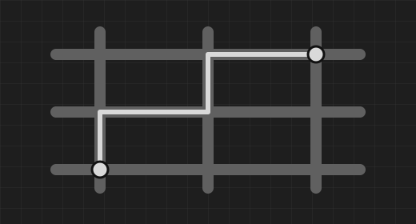

About the project
An academic project exploring route calculation with graph structures and Dijkstra’s algorithm. No undocumented performance metrics are claimed.
Application of Dijkstra’s algorithm to graphs in C.

Concept illustration, not a project photograph.
An academic project exploring route calculation with graph structures and Dijkstra’s algorithm. No undocumented performance metrics are claimed.
Find a minimum-cost route between two graph vertices.
Graph representation and Dijkstra’s algorithm in C.
The web lab illustrates the algorithm step by step on an example graph.
Educational JavaScript simulator, separate from the original academic C project.
Open simulator ↗